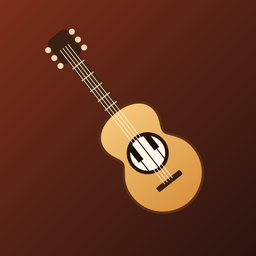

Gita i Piano
„Gita jest git. Piano też.”
Darmowa szkoła gry na gitarze i pianinie: lekcje od podstaw, ćwiczenia z mikrofonem, stroik, metronom, teoria muzyki, akordy i czytanie nut. Program tworzy hobbysta bez formalnego przygotowania muzycznego; jest cały czas rozwijany i testowany.
Pobierz
- iPad i Mac z procesorem Apple: przez TestFlight (link dostajesz od autora).
- Windows 10 i 11, do wyboru:
- Instalator (2 MB): instaluje program i dodaje go do menu Start.
- Wersja ZIP bez instalacji (2,5 MB): rozpakuj folder (prawy przycisk → „Wyodrębnij wszystkie”) i uruchom „Gita i Piano.exe”.
Ostrzeżenia Windows przy pobieraniu i uruchamianiu
Program jest darmowy i nie ma płatnego certyfikatu wydawcy, dlatego Windows go nie zna i ostrzega. To normalne przy programach od osób prywatnych.
- Przeglądarka (Edge lub Chrome) może napisać, że plik „nie jest często pobierany”: kliknij … (albo strzałkę) przy pliku → Zachowaj → Pokaż więcej → Zachowaj mimo to.
- Niebieskie okno „System Windows ochronił ten komputer” (SmartScreen): kliknij Więcej informacji, a potem Uruchom mimo to.
- Windows Defender rzadko, ale może zablokować plik: otwórz Zabezpieczenia Windows → Ochrona przed wirusami i zagrożeniami → Historia ochrony, wybierz wpis o Gita i Piano → Akcje → Zezwalaj. Potem pobierz plik jeszcze raz.
Na Windows postępy zapisują się na komputerze (bez synchronizacji iCloud). Kopię zapasową zrobisz w Postępach.
Pomoc
Pierwsze uruchomienie. Najpierw zakładasz konto admina (rodzic albo nauczyciel) i zapisujesz kod odzyskiwania hasła. Potem admin zakłada konta uczniów.
Mikrofon. Program prosi o mikrofon, żeby słyszeć, co grasz (ocena ćwiczeń, stroik). Dźwięk jest analizowany na bieżąco na urządzeniu i nigdzie nie jest wysyłany.
Synchronizacja (iPad, Mac). Postępy zapisują się na urządzeniu na bieżąco. Dodatkowo można je zapisać w iCloud na własnym koncie Apple ID, żeby mieć je na drugim urządzeniu z tym samym Apple ID.
Kopia zapasowa. Admin może w każdej chwili zapisać kopię całej szkoły albo jednego ucznia do pliku i wczytać ją z powrotem.
Kontakt
Uwagi i błędy: michal.chmay@gmail.com. Testerzy TestFlight mogą też wysłać uwagę ze zrzutem ekranu prosto z aplikacji TestFlight.